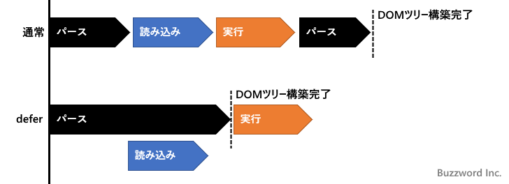
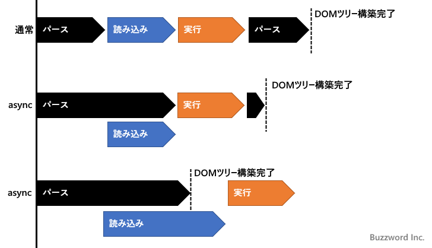

JavaScriptの外部ファイルを非同期で読み込む(async属性,defer属性)
HTML ファイルの中から JavaScript が記述された外部ファイルを読み込む場合に、 script タグに async 属性または defer 属性を設定すると非同期で読み込むことができます。ここでは async 属性または defer 属性を設定して JavaScript の外部ファイルを非同期で読み込む方法、および async 属性と defer 属性の違いについて解説します。
defer属性を設定する
script タグに defer 属性を設定する場合は次のように記述します。
<script defer src="./jscode.js"></script>
通常 HTML のファイルのダウンロードが完了したあと HTML のパースが行われますが、途中に script タグがあり JavaScript が記述された外部のファイルを読み込んでいる場合、パースはいったんストップしてファイルの読み込みがすぐに開始されます。そのあとでファイルに記述されたコードが実行されそのあとでパースが再開されます。
それに対して script タグに defer 属性が設定されていた場合、外部の JavaScript のファイルの読み込みはすぐに開始されますが、読み込まれている間も HTML のパースはストップすることなくそのまま実行されます。そのため JavaScript ファイルの読み込みにかかる時間が原因で HTML のパースおよび画面表示が遅延することはなくなります。
また defer 属性が設定されている場合、外部の JavaScript のファイルに記述されたコードは、 DOM ツリーの構築が完了し DOMContentLoaded イベントが発生する直前に実行されます。もし同じ HTML ファイル内に defer 属性が設定された script タグが複数記述されていた場合、ファイルの読み込みが完了した順番に関係なく、 HTML ページ内に記述されている順番で順に実行されます。

このように defer 属性を設定することで、 HTML のパースや画面表示に影響を与えることなく JavaScript が記述されたファイルを読み込むことができ、また実行するタイミングと実行する順序を予測することができます。
async属性を設定する
script タグに async 属性を設定する場合は次のように記述します。
<script async src="./jscode.js"></script>
script タグに async 属性が設定されていた場合、 外部の JavaScript のファイルの読み込みはすぐに開始されますが、読み込まれている間も HTML のパースはストップすることなくそのまま実行されます。そのため JavaScript ファイルの読み込みにかかる時間が原因で HTML のパースおよび画面表示が遅延することはなくなります。ここは defer 属性の場合と同じです。
async 属性が設定された script タグで読み込まれたコードは、読み完了後すぐに実行されます。まだ HTML のパースを行っている途中だった場合は、パースをいったんストップしてコードの実行が行われます。読み込みが完了する前に HTML のパースが完了し DOM の構築が完了した場合、ファイルの読み込みが完了するのを待たずに次の処理へ進んでいきます。そして読み込みが完了しだいコードを実行します。

もし同じ HTML ファイル内に async 属性が設定された script タグが複数記述されていた場合、 HTML ページ内に記述されている順番に関係なく、ファイルの読み込みが完了したものから実行されていきます。その為、どのコードが先に実行されるかは分かりません。
defer属性とasync属性の違い
defer 属性と async 属性はどちらも外部に記述した JavaScript のファイルの読み込みを HTML のパースと並行して行うため、読み込みによるパースや画面表示の遅延を回避することができます。
defer 属性が設定されている script タグが複数ある場合、 HTML に記述された順にコードを実行することが決まっているので、順に実行しなければ行けないコードを記述する場合に便利です。また実行されるタイミングも DOM ツリーの構築完了後と決まっているのでその前提でコードを記述できます。
async 属性が設定されている script タグは読み込みが完了したものから順に実行されるため、どのコードが先に実行されるのかは読み込まれるまで分かりません。また実行されるタイミングも読み込み完了後にすぐに実行されるため DOM ツリー構築前か構築後なのかもわかりません。ただ読み込み完了後すぐに実行されるので、例えばアクセス解析用のコードなどできる限り早く実行したい場合に便利です。
非同期で外部ファイルを読み込む場合、どちらの属性を設定するべきなのかは上記ような点を考慮して決められてください。なおどちらの属性も外部ファイルを読み込むのではなくインラインでコードを記述する場合には利用できません。
-- --
async 属性または defer 属性を設定して JavaScript の外部ファイルを非同期で読み込む方法、および async 属性と defer 属性の違いについて解説しました。
( Written by Tatsuo Ikura )

著者 / TATSUO IKURA
初心者～中級者の方を対象としたプログラミング方法や開発環境の構築の解説を行うサイトの運営を行っています。